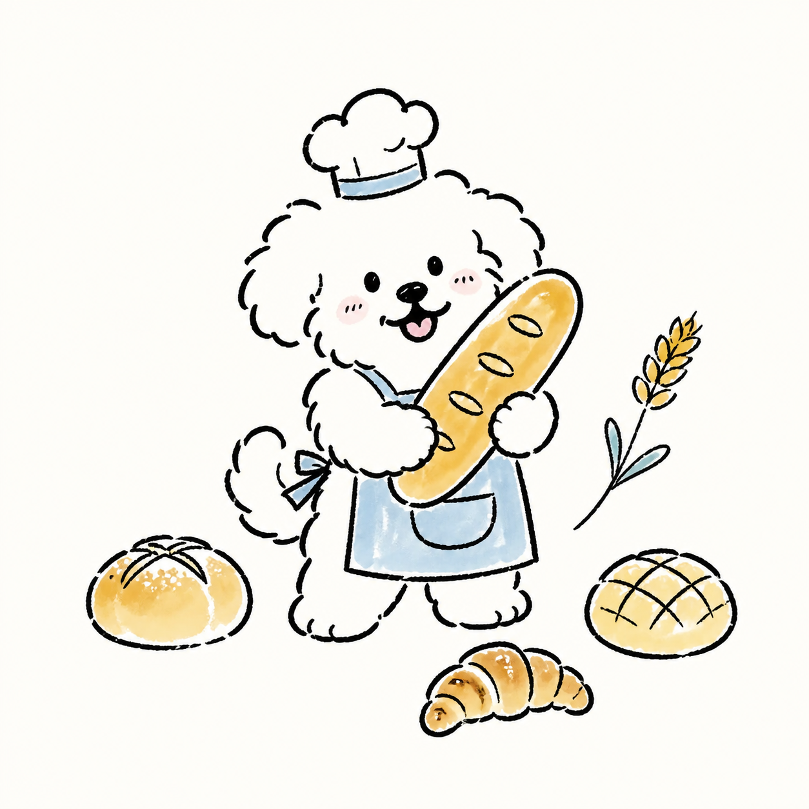

HTML
决定页面有什么：标题、段落、图片、按钮和页面结构。
关键词：内容、结构、语义FROM REFERENCE TO CLICKABLE DEMO
你只需要看懂页面由哪些部分组成。拆图、生成素材、编写代码和检查交互，可以交给 Image2 UI。

PLAY FIRST / LEARN BY DOING
选一种店铺气氛，再卖出面包收集印章。你会直接看到颜色、文案和状态怎样一起改变体验。
松软、温热，最后撒一点海盐。

每买一个面包，就会多一枚印章。
烤箱已经热好了。
HTML 决定页面里有哪些内容。
5 MINUTE QUICK START
准备一张参考图，把下面这句话连同图片发给 Codex。第一次不需要先学 HTML、CSS 或 JavaScript。
截图、设计稿或你喜欢的产品页面都可以。
沿用参考图，或指定案例风格与品牌规范。
明确页面数量、可点击范围和检查要求。
打开结果，检查显示、图片与页面交互。
使用 image-to-ui-skill，参考我上传的图片， 拆分代码 UI 和图片资产，生成一个包含三个页面的可点击手机 Demo， 并检查页面显示、图片加载和交互是否正常。
WHAT YOU GIVE / WHAT YOU GET
INPUT → DECISIONS → OUTPUT
切换案例，比较原始参考、拆解决策和最终可点击页面。这里关注的是工作流，不是要求你先会写代码。
OPTIONAL / BEHIND THE SCENES
这些知识不是使用 Skill 的前置条件。等你想继续修改生成结果时，再展开了解前端三件套。
决定页面有什么：标题、段落、图片、按钮和页面结构。
关键词：内容、结构、语义决定页面长什么样：颜色、字体、间距、布局和响应式。
关键词：外观、布局、适配决定页面怎么回应：点击、切换、校验和动态状态。
关键词：交互、状态、反馈IMAGE2 UI / FAQ
可以。你负责提供参考图、目标和反馈；Skill 会拆解页面、实现代码、生成所需图片并检查结果。你只需要能打开 Demo 并说出哪里需要调整。
不需要。Image2 只用于更适合位图的插画、照片和复杂视觉资产。按钮、文字、导航、表单和大多数图标应由代码实现。
效果图只展示某个静态画面；可点击 Demo 包含真实页面结构和交互，可以切换页面、点击按钮，并在不同屏幕尺寸下运行。
可以。提供 Logo、字体、颜色、间距和组件要求，或从品牌规范库选一套基础规则。对于商业字体和品牌资产，请同时说明你拥有使用权限。
可以。你可以直接用自然语言提出修改，例如“主按钮改成品牌绿、卡片圆角减小、保留当前交互”，也可以让 Skill 只重做指定页面。
文字、按钮和控件需要清晰、可访问且能响应交互。把它们画进图片会导致无法点击、难以修改，也无法适配不同屏幕。
YOUR FIRST DEMO
五分钟后，你应该拿到一个可以打开、点击和继续修改的界面，而不是多学一门课。